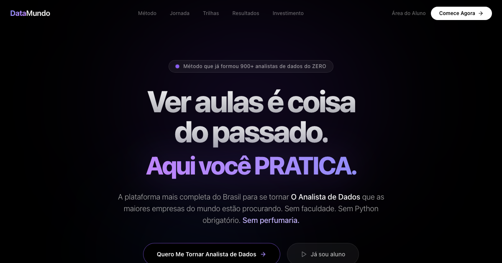
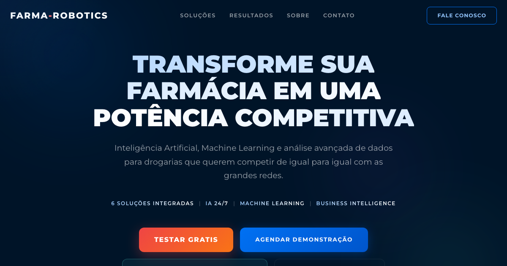
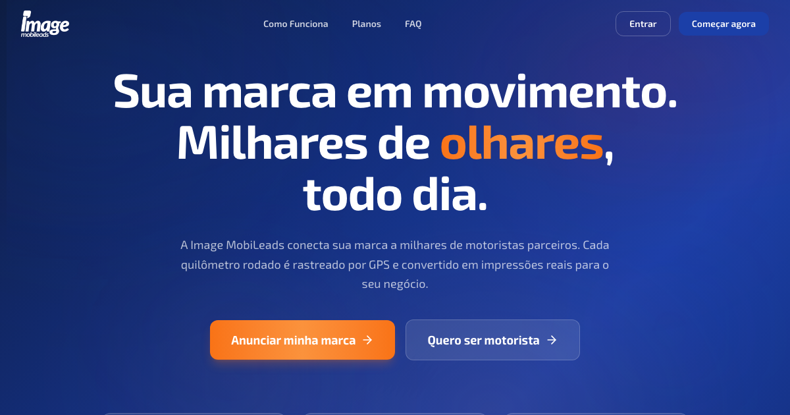
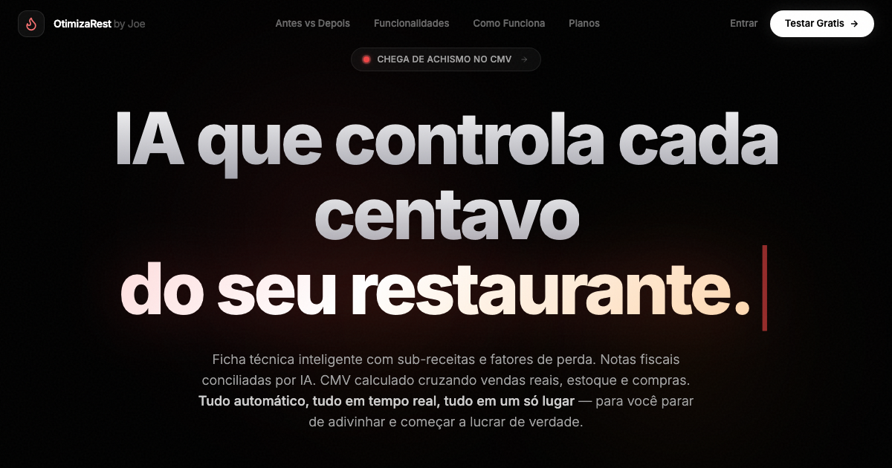
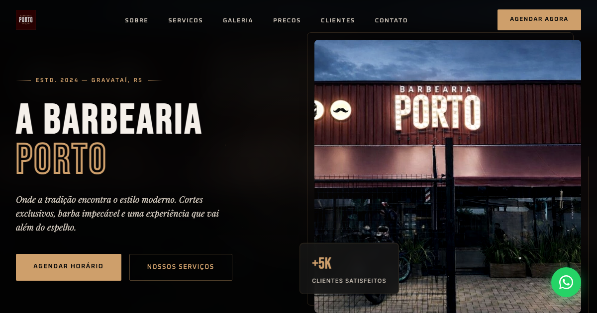

AI Engineer · Data Scientist · Founder — I come from business, speak the language of tech, and know exactly where the money is. That's why every company I touch generates millions.
Most data people come from tech. I come from business. I started in audit and accounting at Grant Thornton and Yara (world's largest fertilizer company), where I learned one thing that changed everything: where the money actually is. That instinct — knowing which number moves the P&L — is what separates dashboards that get ignored from systems that generate millions.
At Grupo RBS, I coordinated 5 data squads and drove the largest Black Friday in company history. At Sicredi (Brazil's first cooperative bank, 6M clients), I led the Tableau → Power BI migration used by thousands daily. I consulted for Piracanjuba (Brazil's largest dairy) and Grupo Herval (25 brands, 7,000 employees, Apple's largest reseller in LATAM). Then I founded Data Mundo — trained 6,000+ professionals, placed 900+ at Nubank, Shopee, Uber — and built it from zero to $1M+ in revenue.
Today, I build end-to-end AI ecosystems — from WhatsApp agents and ML pricing engines to predictive demand models and managerial BI. I speak four languages (lived 3 months in Spain to learn Spanish), write production code, and lead teams. I bridge the gap between business strategy and technical execution. That's my superpower.
A unique trajectory combining financial rigor with cutting-edge technology.
Portuguese, English, Spanish, and Italian -- built for global teams and international markets.
Taught 6,000+ students. 900+ now work at top tech companies worldwide.
8 live production apps. Full-stack AI systems. $1M+ in self-made revenue.
Started in financial audit at Grant Thornton (Big 8 global), then Yara — the world's largest fertilizer company. This is where I learned to see business through numbers. Automated intercompany reconciliation across countries, generating millions in recovered value and operational savings.
Business + Data DNABuilt BI dashboards for Latin America's largest EdTech group. Implemented gamification analytics, supported LGPD compliance, and delivered actionable insights across the Plataforma A ecosystem.
3M+ Users PlatformAllocated to Sicredi -- Brazil's first cooperative bank with 100+ years and 6M clients. Led the full migration from Tableau to Power BI. Created dashboards accessed by thousands daily. Then moved to T10 bank (Grupo Martins, R$7B revenue).
Tableau → Power BI MigrationBuilt and managed 5 specialized data squads: Product, Growth, Engagement, Retention, and Sports. Led LGPD implementation across the organization. Orchestrated the company's largest Black Friday in history.
5 Squads • Record Black FridayFounded an EdTech from scratch and scaled it to $1M+ in revenue. Trained 6,000+ professionals in data analytics and science. 900+ graduates placed at companies like Nubank, Shopee, LinkedIn, Uber, and iFood. Consulted for Piracanjuba and Grupo Herval (25 brands, 7,000 employees).
$1M+ Revenue • 6,000+ StudentsBuilding complete AI ecosystems: WhatsApp AI agents, inventory forecasting with ML, intelligent pricing, market basket analysis, and managerial BI with 34 AI-powered indicators. Co-founded FLEEKERS -- a marketing SaaS platform.
34 AI-Powered IndicatorsEvery project below is live in production. Real users, real revenue, real impact. Click to explore.

AI-powered learning platform with gamification, 9 learning paths, AI-driven CV & LinkedIn reviews, and behavioral profiling quiz funnels.

Complete AI ecosystem for pharmacies: WhatsApp AI agents, ML pricing, demand forecasting, market basket analysis, and 34 BI indicators.

OOH vehicle advertising platform with GPS tracking, automated Asaas payments, driver gamification, and real-time campaign dashboards.
Marketing SaaS with multi-tenant architecture, AI-powered post creator, and growth analytics for agencies and creators.

BI + AI for restaurants. Intelligent dashboards, cost optimization, and predictive analytics for food service operations.

Three additional full-stack apps: barbershop booking system, BJJ academy management, and church management platform. All live in production.
Whether you need an AI engineer, a data strategist, or a technical co-founder, I'd love to hear about your challenge.